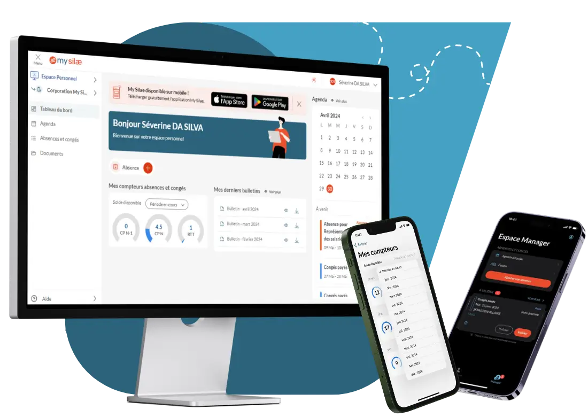
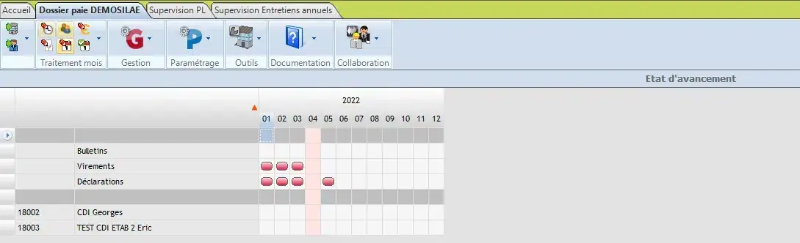
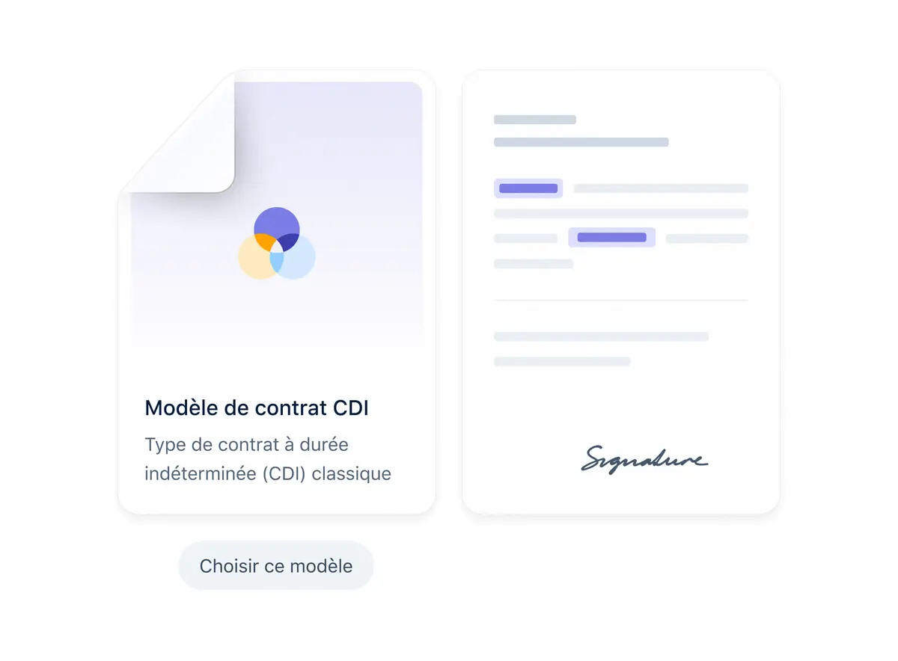

Présentation des deux outils
On compare souvent PayFit et Silae comme s’ils étaient interchangeables. En réalité, ces deux logiciels ne jouent pas dans la même catégorie. PayFit a été créé en 2016 à Paris par des ingénieurs qui voulaient permettre à n’importe quel dirigeant de gérer sa paie sans passer par un cabinet comptable. Le pari était audacieux : transformer un sujet réputé imbuvable en quelque chose d’aussi simple qu’une déclaration d’impôts en ligne.
Silae, c’est une autre histoire. Fondé il y a plus de 20 ans, le logiciel s’est imposé comme le moteur de paie de référence des experts-comptables en France. Plus de 7,5 millions de bulletins de paie sont édités chaque mois avec Silae. C’est un outil de professionnel, conçu pour des professionnels, et il ne s’en cache pas : impossible d’acheter une licence Silae en direct, il faut passer par un partenaire certifié.
Points forts
- Paie 100% automatisée, DSN native
- Interface conçue pour les non-experts
- Onboarding en moins d’une semaine
- Support francophone réactif par chat
- Modules RH intégrés (congés, notes de frais)
Limites
- 350 conventions collectives (vs 900+ chez Silae)
- Moins adapté aux paies très complexes
- Pas de vente via partenaire / cabinet
Points forts
- 900+ conventions collectives, mises à jour hebdomadaires
- Moteur de paie le plus complet du marché français
- Gère les paies multi-établissements et cas spéciaux
- 7,5 millions de bulletins édités par mois
- Coffre-fort numérique et dématérialisation
Limites
- Courbe d’apprentissage significative
- Vente uniquement via partenaires certifiés
- Interface moins moderne que la concurrence
Aujourd’hui, PayFit revendique près de 10 000 entreprises clientes en France, principalement des TPE et startups entre 1 et 50 salariés. Silae, de son côté, est utilisé par des milliers de cabinets comptables et d’entreprises, avec une position de leader incontesté sur le marché de la paie externalisée. Depuis 2018, c’est le logiciel social préféré des experts-comptables selon le Baromètre du monde du chiffre.

Fonctionnalités comparées
Le moteur de paie : le vrai sujet
Autant le dire tout de suite : sur la puissance brute du moteur de paie, Silae est au-dessus. Et c’est logique. Le logiciel a été conçu dès le départ pour des gestionnaires de paie professionnels qui traitent des centaines de bulletins par mois. Silae gère plus de 900 conventions collectives, mises à jour chaque semaine par une équipe juridique dédiée. Les cas les plus tordus — intermittents du spectacle, HCR, BTP, intérim, DOETH — sont couverts nativement.
PayFit couvre environ 350 conventions collectives, ce qui représente la très grande majorité des entreprises françaises. La paie est automatisée de bout en bout : saisie des variables, calcul des cotisations, génération des bulletins, envoi de la DSN. Pour une TPE avec une convention standard (Syntec, commerce, métallurgie...), PayFit fait le travail sans accroc. Le problème survient quand on sort des sentiers battus : conventions rares, modulations de temps partiel, particularités sectorielles.

DSN et conformité réglementaire
La DSN (Déclaration Sociale Nominative) est le nerf de la guerre. Silae est numéro 1 du déploiement de la DSN en France depuis 2019. Le logiciel gère tous les types de DSN (mensuelles, de substitution, événementielles) avec une fiabilité éprouvée sur des millions de déclarations.
PayFit gère également la DSN de manière native et automatisée. Pour une PME classique, la qualité de la DSN PayFit est comparable à celle de Silae. La différence se fait sentir sur les cas limites et les DSN correctrices sur des périodes antérieures, où Silae dispose de plus de souplesse.
Les modules RH complémentaires
C’est là que PayFit prend l’avantage. En plus de la paie, PayFit intègre nativement la gestion des congés et absences, les notes de frais, l’onboarding des nouveaux salariés, le dossier RH du collaborateur et un portail salarié complet. Le collaborateur peut consulter ses bulletins, poser ses congés et mettre à jour ses informations personnelles depuis son espace.
Silae a considérablement enrichi son offre ces dernières années avec mySilae, un portail collaborateur accessible en web et mobile. Le logiciel propose désormais la gestion des congés et absences, un coffre-fort numérique pour les bulletins, et depuis septembre 2025, mySilae Santé (module santé et prévoyance) et mySilae Assistant, un assistant alimenté par l’IA. Mais les fonctionnalités RH restent moins intégrées que chez PayFit.

L’ergonomie et la prise en main
Soyons francs : PayFit est incomparablement plus simple à utiliser. C’est même son principal argument de vente. Un fondateur de startup qui n’a jamais ouvert un bulletin de paie peut gérer sa première paie en quelques heures. Chaque étape est guidée, les termes techniques sont expliqués, et le risque d’erreur est minimisé par des contrôles automatiques.
Silae, c’est l’inverse. L’interface reflète la densité fonctionnelle de l’outil : beaucoup de menus, beaucoup d’options, une logique qui n’est pas immédiatement intuitive pour un novice. En revanche, une fois la logique intégrée et les automatismes en place, les gains de productivité sont spectaculaires. Un gestionnaire de paie formé à Silae peut passer de 300 à 500 bulletins par mois, un volume que PayFit ne peut tout simplement pas adresser.

Les intégrations
PayFit propose plus de 50 connecteurs natifs : logiciels de comptabilité (Pennylane, QuickBooks, Sage), outils RH (Lucca, BambooHR), messageries (Slack, Teams) et une API ouverte bien documentée. Pour une TPE/PME, l’écosystème est largement suffisant.
Silae mise sur son API pour s’intégrer dans les écosystèmes existants des cabinets comptables. Le logiciel se connecte nativement aux principaux outils de production comptable et aux logiciels de GTA (Gestion des Temps et Activités). L’intégration est souvent réalisée par le partenaire certifié qui déploie Silae.
Sécurité et hébergement
Les deux éditeurs prennent la sécurité des données au sérieux. PayFit héberge en France sur des serveurs certifiés ISO 27001. Silae héberge également en France, avec une démarche de certification SecNumCloud en cours. Les deux proposent un DPA pour vos obligations RGPD. Sur ce critère, match nul.
Tableau comparatif
| Critère | PayFit | Silae |
|---|---|---|
| Public cible | Dirigeants, RH, TPE/PME | Experts-comptables, gestionnaires paie Pro |
| Moteur de paie | Complet, automatisé | Très complet, professionnel Meilleur |
| Conventions collectives | 350+ | 900+, mises à jour hebdomadaires Meilleur |
| DSN automatique | Oui, incluse | Oui, n°1 du déploiement DSN Meilleur |
| Multi-établissements | Limité | Natif, complet Meilleur |
| Gestion des congés | Oui, intégré Meilleur | Oui, via mySilae |
| Portail salarié | Oui, complet Meilleur | Oui, via mySilae |
| Notes de frais | Oui Meilleur | Non natif |
| Coffre-fort numérique | Oui | Oui |
| Application mobile | Oui | Oui (mySilae) |
| Achat direct | Oui, en ligne Meilleur | Non, via partenaire certifié |
| Prise en main | Très simple Meilleur | Formation nécessaire |
| Productivité (bulletins/mois) | Adapté jusqu’à 200 sal. | 300 à 500 bulletins/gestionnaire Meilleur |
| Support francophone | Oui, chat et email Meilleur | Oui, via partenaire |
| Idéal pour | TPE, startups, 1 à 50 sal. | Cabinets, PME complexes, 10 à 5000+ sal. |
Tarifs et coûts réels
C’est probablement le sujet où la différence entre les deux outils est la plus marquée. PayFit joue la transparence avec des tarifs affichés sur son site. Silae fonctionne exclusivement sur devis, via ses partenaires certifiés. Et les tarifs de Silae ont fait couler beaucoup d’encre ces deux dernières années.
PayFit
20 salariés : environ 160 à 220 €/mois
50 salariés : environ 350 à 500 €/mois
Silae
Formation utilisateurs : 1 000 à 3 000 €
Migration : jusqu’à 5 000 €
Quel outil selon votre profil ?
Vous gérez la paie vous-même ou avec un comptable généraliste. Pas de gestionnaire de paie dans l’équipe. Vous voulez un outil qui marche tout seul, sans formation.
Choisissez PayFitVous êtes expert-comptable, gestionnaire de paie ou vous disposez d’un service paie interne. Vous traitez un volume important de bulletins chaque mois.
Choisissez SilaeBTP, HCR, spectacle, intérim, multi-établissements... Votre paie sort de l’ordinaire et vous avez besoin d’un moteur capable de tout gérer sans compromis.
Choisissez SilaeVous cherchez un outil qui fait paie + RH sans multiplier les logiciels. Vous n’avez pas de gestionnaire de paie dédié mais un RH qui porte plusieurs casquettes.
Préférez PayFit, ou envisagez FactorialRécapitulatif : quand choisir chaque outil ?
- Choisissez PayFit si vous avez moins de 50 salariés, pas de gestionnaire de paie dédié, et que vous voulez gérer la paie en autonomie.
- Choisissez PayFit si la simplicité de prise en main est votre critère numéro 1 et que votre convention collective est standard.
- Choisissez Silae si vous passez par un cabinet comptable ou un gestionnaire de paie professionnel.
- Choisissez Silae si votre paie est complexe : multi-établissements, conventions rares, secteurs réglementés, gros volumes.
- Envisagez Factorial ou Lucca si votre priorité est un SIRH complet (recrutement, formation, compétences) avec un module paie suffisant.
Notre avis
Comparer PayFit et Silae, c’est un peu comme comparer une voiture automatique et une boîte manuelle. La première est idéale pour le conducteur qui veut simplement aller du point A au point B sans se poser de questions. La seconde offre un contrôle total, mais exige une maîtrise que tout le monde n’a pas.
PayFit a réussi son pari : rendre la paie accessible au plus grand nombre. Pour un dirigeant de TPE, un DRH de PME ou un fondateur de startup, c’est l’outil qui permet de sortir des bulletins conformes sans avoir fait d’études de paie. L’interface est limpide, le support réactif, et les mises à jour légales sont gérées sans intervention de votre part. La limite, c’est la puissance brute : au-delà de 50 salariés ou avec des conventions atypiques, PayFit peut montrer ses limites.
Silae est un outil d’une autre trempe. C’est le logiciel qui fait tourner la paie de la France, littéralement. 7,5 millions de bulletins par mois, 900+ conventions collectives, une fiabilité éprouvée sur 20 ans. Mais c’est un outil de professionnel, qui s’adresse à des professionnels. Si vous n’avez pas de gestionnaire de paie dans votre équipe ou si vous ne travaillez pas avec un cabinet comptable, Silae n’est tout simplement pas fait pour vous.
Notre recommandation tient en une phrase : choisissez PayFit si vous gérez la paie en interne sans expert dédié. Choisissez Silae si vous travaillez avec un professionnel de la paie ou si votre paie est complexe. Dans les deux cas, vous serez bien servi.
Checklist avant de choisir votre outil
- Déterminez qui pilotera la paie au quotidien : vous-même, un RH, ou un cabinet comptable.
- Vérifiez que votre convention collective est couverte par l’outil choisi.
- Comptez précisément votre nombre de salariés pour obtenir un devis réaliste.
- Si vous choisissez Silae, sélectionnez un partenaire certifié local pour l’accompagnement.
- Planifiez la migration en début d’exercice pour éviter les problèmes de DSN en cours d’année.
- Demandez une démo personnalisée (PayFit) ou contactez un intégrateur (Silae) avant de vous engager.
- Budgétisez les coûts d’intégration et de formation, surtout si vous passez à Silae.
PayFit ou Silae : trouvez votre outil en 3 clics
Répondez à 3 questions pour obtenir une recommandation personnalisée.
Prêt à choisir ?
Testez PayFit en démo ou contactez un partenaire Silae certifié près de chez vous.